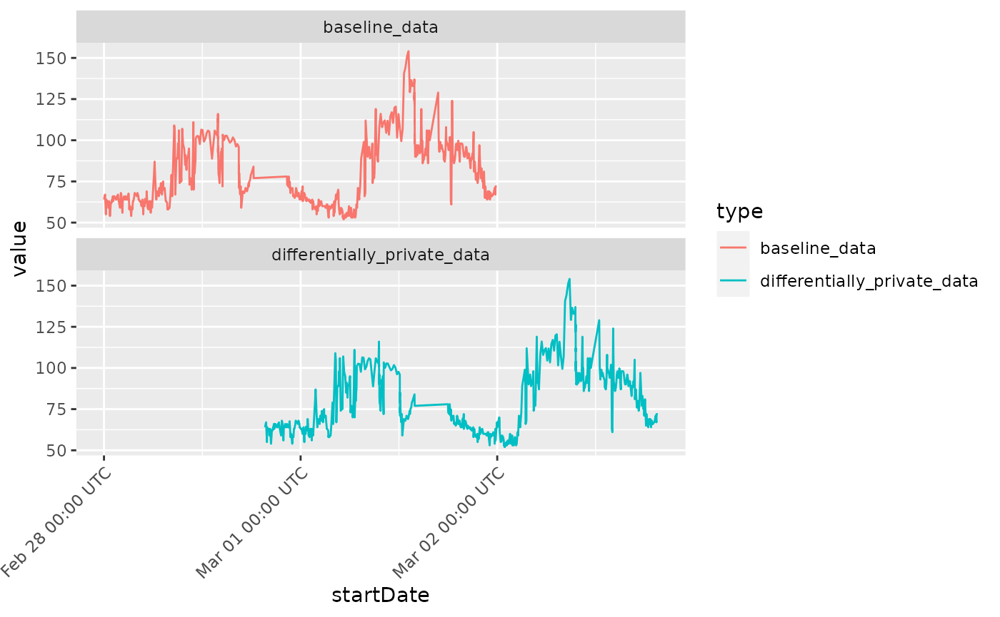

3. Add Differential Privacy
Source:vignettes/03_differential_privacy.Rmd
03_differential_privacy.RmdAdding Differential Privacy
Health data data can repesent quite sensitive pieces of information,
which in some cases should be avoided to be leaked in an inappropriate
context. To still be able to use one’s wearable data, the
health2R package provides a function called
add_differential_privacy, which takes a duration object as
input for the variable max_differential_privacy_offset, and
subsequently makes a data frame differentially private by adding random
noise to all time stamps in the data, while retaining the relationship
between the respective time data.
First we plot some example heart rate data:
parsed_healthdata <- read_rds("path/to/your/health_data.rds")
rhr_data <- get_cardio(health_db = parsed_healthdata,
var = "heartrate",
start_date = as_date("2023-02-28"),
end_date = as_date("2023-03-02"))
rhr_data %>%
select(type,sourceName,unit,startDate,value) %>%
head()## # A tibble: 6 × 5
## type sourceName unit startDate value
## <chr> <chr> <chr> <dttm> <dbl>
## 1 HKQuantityTypeIdentifierHeartRate Mariana ’s … coun… 2023-02-28 00:00:07 64
## 2 HKQuantityTypeIdentifierHeartRate Mariana ’s … coun… 2023-02-28 00:07:58 67
## 3 HKQuantityTypeIdentifierHeartRate Mariana ’s … coun… 2023-02-28 00:04:57 66
## 4 HKQuantityTypeIdentifierHeartRate Mariana ’s … coun… 2023-02-28 00:13:59 55
## 5 HKQuantityTypeIdentifierHeartRate Mariana ’s … coun… 2023-02-28 00:15:53 64
## 6 HKQuantityTypeIdentifierHeartRate Mariana ’s … coun… 2023-02-28 00:21:58 63And the differentially privat data, which has been privatized with a
random noise addition of up to 2 days. This duration object parameter
can also hold shorter periods as appropriate,
e.g. duration(3600,"seconds") or similar.
priv_data <-
rhr_data %>%
select(type,sourceName,unit,startDate,value) %>%
add_differential_privacy(max_differential_privacy_offset = lubridate::duration(2,"days"))
priv_data %>% head()## # A tibble: 6 × 5
## type sourceName unit startDate value
## <chr> <chr> <chr> <dttm> <dbl>
## 1 HKQuantityTypeIdentifierHeartRate Mariana ’s … coun… 2023-02-28 19:39:28 64
## 2 HKQuantityTypeIdentifierHeartRate Mariana ’s … coun… 2023-02-28 19:47:19 67
## 3 HKQuantityTypeIdentifierHeartRate Mariana ’s … coun… 2023-02-28 19:44:18 66
## 4 HKQuantityTypeIdentifierHeartRate Mariana ’s … coun… 2023-02-28 19:53:20 55
## 5 HKQuantityTypeIdentifierHeartRate Mariana ’s … coun… 2023-02-28 19:55:14 64
## 6 HKQuantityTypeIdentifierHeartRate Mariana ’s … coun… 2023-02-28 20:01:19 63Plotting the two time series shows the successful addition of obfuscating noise:
combined_data <- bind_rows(rhr_data %>% mutate(type = "baseline_data"),
priv_data %>% mutate(type = "differentially_private_data"))
ggplot(combined_data,
aes(x = startDate,
y = value,
col = type)) +
geom_line() +
facet_wrap(~type,nrow = 2) +
scale_x_datetime(date_breaks = "1 day",
date_labels = "%b %d %H:%M UTC") +
theme(axis.text.x = element_text(angle = 45,vjust = 1,hjust = 1))